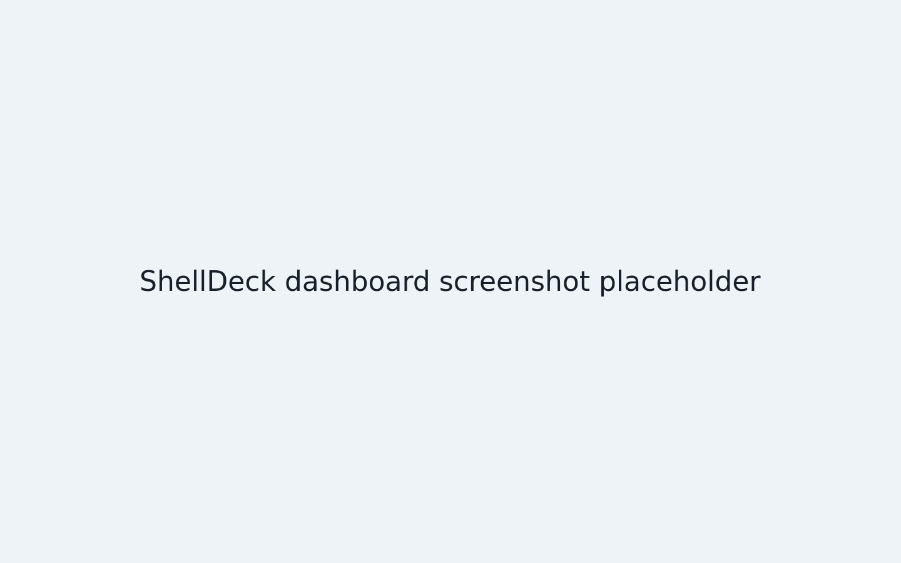
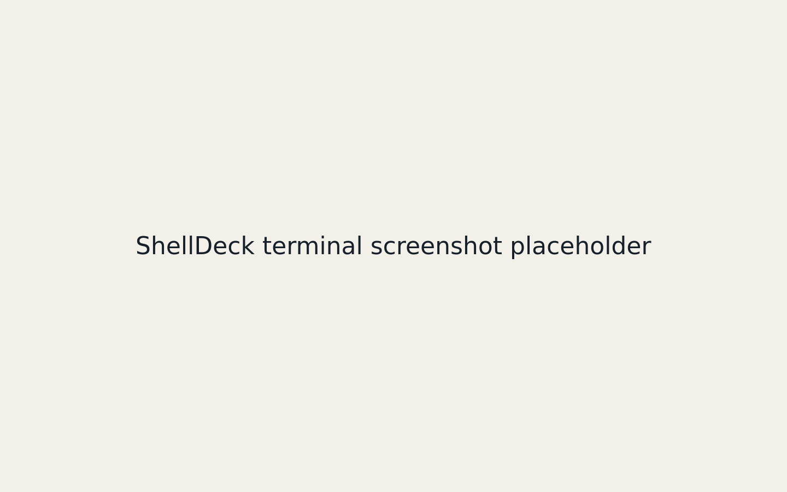
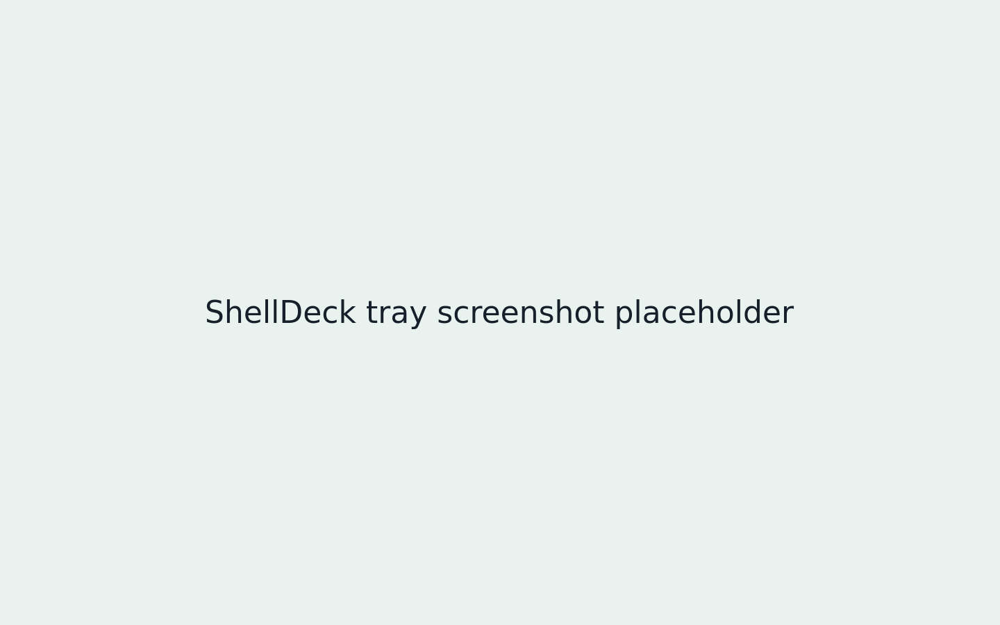

Desktop client
ShellDeck Desktop
A native window for the ShellDeck server you already run. Point it at your server URL, sign in there, and keep using the same dashboard.
Checking the current desktop release.

It wraps the web UI, not the server
ShellDeck still runs on the machine that has tmux and SSH. The desktop app stores your server URL, opens it in a persistent webview, and leaves server auth to the existing login page.


Updates are signed
The app checks for a signed release on startup and once an hour. When an update is available, Tauri verifies the signature before it installs anything.